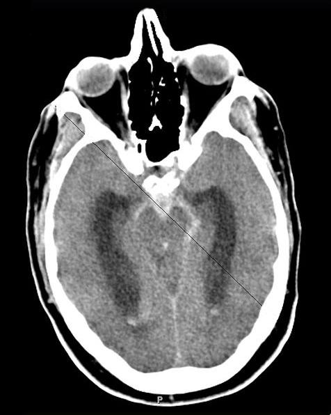

Ficha del catálogo
Hemorragia subaracnoidea
- Sistema
- Nervioso
- Modalidad
- TC
- Región
- Espacio subaracnoideo y cisternas basales
- Dificultad
- Intermedio
La hemorragia subaracnoidea es la presencia de sangre en el espacio que ocupa el líquido cefalorraquídeo entre la aracnoides y la piamadre. La causa no traumática más frecuente es la rotura de un aneurisma sacular. Se manifiesta como cefalea súbita de máxima intensidad, con o sin alteración del estado de conciencia.
Técnica
Tomografía de cráneo sin contraste realizada de forma inmediata, seguida de angiotomografía cerebral cuando se confirma o se sospecha con fuerza el sangrado. La punción lumbar mantiene su papel cuando la tomografía es negativa y persiste la sospecha clínica.
Qué observar
- Material hiperdenso en cisternas basales, cisura de Silvio y surcos corticales
- Sangre en el sistema ventricular, sobre todo en cuartos ventrículo y astas occipitales
- Distribución del sangrado como pista de la localización del aneurisma
- Hidrocefalia aguda por bloqueo de la reabsorción
- Hematoma parenquimatoso asociado
- Patrón perimesencefálico, de mejor pronóstico
Hallazgos
Ocupación hiperdensa de los espacios subaracnoideos que normalmente son hipodensos, con relleno de cisternas basales, cisura interhemisférica y surcos de la convexidad. La distribución orienta al origen: El predominio en la cisura interhemisférica anterior sugiere aneurisma de la comunicante anterior y el predominio silviano sugiere aneurisma de la cerebral media. La sensibilidad de la tomografía es muy alta en las primeras horas y disminuye de forma progresiva con los días.
Perlas
Una tomografía normal no descarta el diagnóstico cuando han pasado varios días desde el inicio del cuadro, porque la sangre se reabsorbe y deja de ser hiperdensa. En ese escenario la resonancia con FLAIR y secuencias de susceptibilidad, o el análisis del líquido cefalorraquídeo, resultan determinantes.
Diagnóstico diferencial
- Hemorragia subaracnoidea traumática
- Predomina en surcos de la convexidad adyacentes al punto de impacto y se asocia a contusiones y fracturas.
- Trombosis de senos venosos
- Sangrado de localización cortical atípica, con signos de trombo en el seno y realce en vacío tras contraste.
- Síndrome de vasoconstricción cerebral reversible
- Sangre limitada a surcos de la convexidad, con cefaleas recurrentes en trueno y estenosis arteriales segmentarias reversibles.
- Angiopatía amiloide
- Hemorragia de surcos de la convexidad en pacientes de edad avanzada, con microsangrados lobares en susceptibilidad.
Simuladores
- Pseudohemorragia subaracnoidea por edema cerebral difuso e ingurgitación venosa
- Contraste yodado en el espacio subaracnoideo tras procedimiento endovascular
- Artefacto de endurecimiento del haz en la fosa posterior
Por modalidad
- TC
- Detecta la sangre aguda con alta sensibilidad en las primeras horas y, con angiografía por tomografía, localiza el aneurisma responsable.
- RM
- Es superior en fases tardías gracias a FLAIR y a las secuencias sensibles a susceptibilidad, que muestran restos hemáticos ya no visibles en tomografía.
Protocolo
Tomografía sin contraste con cortes finos desde el agujero magno hasta el vértex, seguida de angiotomografía arterial con reconstrucciones multiplanares y volumétricas para valorar el cuello aneurismático y su relación con las ramas vecinas.
Clasificación
La escala de Fisher y su versión modificada gradúan la cantidad y distribución de la sangre en tomografía y estiman el riesgo de vasoespasmo. En el plano clínico se emplean las escalas de Hunt y Hess y la de la Federación Mundial de Sociedades de Neurocirugía.
Errores frecuentes
- Descartar el diagnóstico con una tomografía normal realizada varios días después del inicio
- Confundir la pseudohemorragia por edema difuso con sangrado verdadero
- No solicitar estudio vascular ante un patrón cisternal típico

hemorragia subaracnoidea aneurisma roto cisternas basales cefalea en trueno escala de Fisher angiotomografía